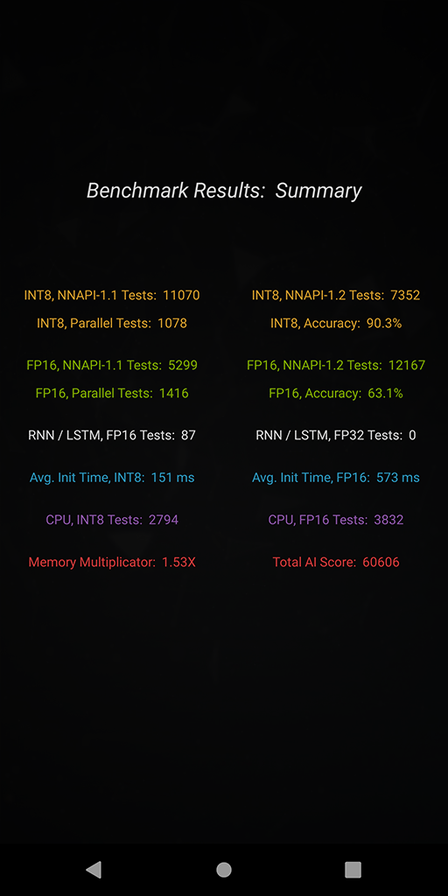

AI Benchmark v4:Pushing Mobile NPUs to Their Limits
Twice larger number of tests, native hardware acceleration on many mobile platforms, new tasks targeted at multiple model acceleration, the possibility of loading and running custom TFLite models, NPU / DSP throttling tests — this isn't the full list of improvements coming with the 4th version of AI Benchmark. The detailed description of these and other changes introduced in this release are provided below.
Native Hardware Acceleration
One of the most awaited features in this release is native AI hardware acceleration on many mobile chipsets. This became possible with the introduction of TensorFlow Lite delegates working as a middleware between the standard TFLite runtime and vendors' custom deep learning libraries. Unlike the standard SDK-based benchmarking approach that requires each model to be converted and "optimized" for each vendor, thus making the comparison absolutely unfair, this solution allows to run the identical model on every single mobile device, while benefiting from highly optimized proprietary SDKs and avoiding all limitations of the standard Android NNAPI acceleration path.
The following TFLite delegates are already available in AI Benchmark v4:
● Qualcomm Hexagon NN delegate: allows to run quantized deep learning models directly on Snapdragon Hexagon DSPs, is compatible with the Hexagon 680 (Snapdragon 821/820, 660, 636), Hexagon 682 (Snapdragon 835), Hexagon 683 (Snapdragon 662, 460), Hexagon 685 (Snapdragon 845, 712, 710, 675, 670), Hexagon 686 (Snapdragon 665), Hexagon 688 (Snapdragon 730/G), Hexagon 690 (Snapdragon 855/Plus), Hexagon 692 (Snapdragon 720/G), Hexagon 696 (Snapdragon 768/G, 765/G), Hexagon 698 (Snapdragon 865) and newer models. Note that the Hexagon DSP might be locked on some devices and inaccessible by anyone except for the corresponding vendor.
● Samsung Eden delegate: provides access to the Exynos NPU (can currently run only a few models) and contains optimized GPU kernels for Exynos' Mali GPUs. Is compatible with the Exynos 9820, 9825, 980, 990 and newer models.
● TFLite GPU delegate: a universal OpenCL / OpenGL-based delegate for accelerating floating-point models on mobile GPUs. Is compatible with almost any GPU supporting OpenGL ES 3.0+ and provides excellent results on both new and older-generation devices.
More delegates will be added to AI Benchmark as they become available and ready to use on mobile devices.
Running Custom TensorFlow Lite Models
One can now load and run any TensorFlow Lite model directly in the benchmark (in the PRO Mode) with all acceleration options available for the standard benchmark tests. There is no need for using any complicated tools or Android programming — just put your model.tflite file into the Download folder, select the desired acceleration options (TFLite CPU backend, Android NNAPI, Hexagon NN / Eden / TFLite GPU delegates when available) and get the resulting latency or a detailed error log if the model is incompatible with the corresponding delegator. You can also select your model manually using the prompted File Manager — note that in this case the "Show Internal Storage" option should be enabled as the full path to your model file is required.
If you do not have any previous experience of working with the TensorFlow Lite, you can find the detailed instructions on how to convert your pre-trained TensorFlow model to TFLite format here (just three lines of code are needed). If you are using PyTorch — then you first need to export your model to ONNX and then convert the resulting file to TFLite. You can also quantize your model during the conversion to be able to run it on the Hexagon DSP, Google Coral TPU and some other integer-only mobile AI accelerators.
NNAPI-1.2 Tests
Since NNAPI-1.1 implements support for a very limited number of ML operations, it cannot accelerate a large number of new deep learning models presented in the past years. Therefore, in AI Benchmark v4 we introduced 25 new subtests, the majority of which are NNAPI-1.2 compatible. The new benchmark version contains MobileNet-V3 and PyNET architectures, LSTM-based OCR and Text Completion models, neural networks with transposed convolution / depth-to-space / gather ops, etc. The number of accuracy tests was also increased from 10 to 18, while the reported errors became more transparent. In total, the 4th benchmark version consists of the 14 benchmark sections listed below:
● Section 1. Classification,MobileNet-V2(INT8 + FP16 + Batch Size=4)● Section 2.Classification,Inception-V3(INT8 + FP16)● Section 3. Face Recognition,MobileNet-V3(INT8 + FP16)● Section 4. Classification,MobileNet-V2 x 8(INT8 + FP16 | Parallel)● Section 5. OCR,CRNN (ResNet-18 + Bi-LSTM)(FP16 + FP32)● Section 6. Deblurring,PyNET(INT8 + FP16)● Section 7. Super-Resolution,VGG19(INT8 + FP16)● Section 8. Super-Resolution,SRGAN(INT8 + FP16)● Section 9. Bokeh Rendering,U-Net(INT8 + FP16)● Section 10.Semantic Segmentation,DeepLab-V3+(INT8 + FP16)● Section 11.Semantic Segmentation,DeepLab-V3+(INT8 + FP16 in Parallel)● Section 12. Image Enhancement,DPED ResNet(INT8 + FP16)● Section 13. Text Completion,LSTM(FP16)● Section 14. Memory limits,SRCNN(FP16 | Various Resolutions)
Each section might consist of several subtests running quantized and floating-point models on different accelerators, measuring the initialization time and accuracy of the predicted outputs as well as checking the speed of the pure CPU inference.
A more detailed information about each test / model can be found here.
Parallel and NPU / DSP Throttling Tests
There are two test categories in AI Benchmark v4 that should be mentioned separately. The first one is the Parallel Execution category that is aimed at processing multiple data simultaneously. It consists of three different tasks: inference with a large batch size in Section 1, running a floating-point and a quantized model in parallel to check acceleration support for mixed type inference in Section 11. Finally, in the last task the device is running up to 8 floating-point / quantized models simultaneously (Section 5) to see if it is capable of asynchronous model inference and acceleration, which is crucial for many real-world problems involving the use of more than one deep learning model.
In the PRO mode, one can find a new Throttling Test that allows to run the Inception-V3 model on CPU or with any available acceleration option and monitor the resulting FPS over time. This test does not have a time limit, therefore it is possible to check both the short- and long-term thermal stability of the mobile chipset and all its components. We should note that this test will be significantly expanded in the next benchmark versions, introducing more models and considerably more complex setups.
Scoring System

AI Benchmark v4 measures more than 100 different aspects of AI performance that are grouped in the following categories:
● INT8, NNAPI-1.1 Compatible Tests
● INT8, NNAPI-1.2 Compatible Tests
● INT8, Parallel Model Execution
● INT8, Single / Multi-Thread CPU Tests
● INT8, Accuracy Tests
● INT8, Initialization Time
● FP16, NNAPI-1.1 Compatible Tests
● FP16, NNAPI-1.2 Compatible Tests
● FP16, Parallel Model Execution
● FP16, Single / Multi-Thread CPU Tests
● FP16, Accuracy Tests
● FP16, Initialization Time
● FP16, RNN / LSTM Tests
● FP32, RNN / LSTM Tests
● FP16, Memory Tests
The weight of each test category is chosen according to its popularity among the research and development ML community and its relevance for mobile inference, therefore the final benchmark score is reflecting the actual user experience of running the existing AI applications on smartphones. More information about the scoring system will be provided in our next AI Benchmark paper, the previous report with a detailed overview of the last release can be found here.


{kind=link}